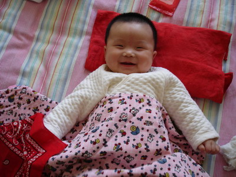
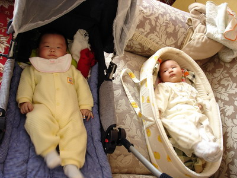
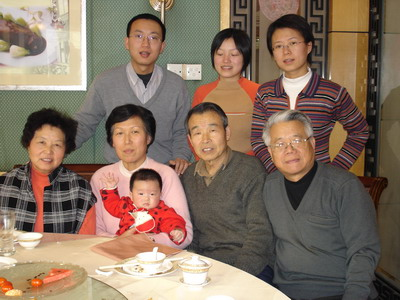

曼曼这个月有好几次可以自己躺在床上翻身了，然后趴在床上抬头看着身边的人笑。不过，她不经常翻身。
曼曼笑得越来越多了，喜欢别人和她玩“藏猫猫”的游戏，每次出现在她面前冲她叫一声，她都会兴奋地“咯咯”的笑起来。曼曼的姑姑迷上了曼曼的笑声，一有空就会来逗曼曼，总说听见曼曼发自心底的天真无邪的笑声就什么烦恼都没有了。

曼曼小手进步很快，看见什么都想伸手去抓，拿着摇铃可以使劲地摇上很长时间。
让曼曼握住我的两个大拇指，她自己全身一使劲，就可以从床上坐起来。每次坐起来之后，她都会很高兴。
曼曼会发的音也多起来，可以发出“姆—妈”，“da”，“wa”“ba”“bu”等音了。现在她整天“爸爸爸爸”的叫，虽然她根本不认识谁是爸爸。
曼曼每次要尿之前，经常会变成一个话篓子，发出“ba”“bu”等声音说个不停。这时给她把尿经常十拿九稳。
2月8日大年三十，曼曼快5个月了。她爷爷、奶奶、姑姑、郭嘉和我带着她来到了延庆的八达岭温泉度假村。我们在这里度过了三十、初一、初二，初三下午才回家。曼曼不喜欢一个人躺在旁边，喜欢被抱着坐在餐桌边，喜欢热闹，而且特别爱笑，一有人逗她就笑，俨然是这群人中的小明星。吴院长的外孙阿仔比曼曼小半个月，但是好像小很多似的，坐着时头还不太稳。曼曼和阿仔相处融洽，面对面坐着时都伸手去抓对方的小手。

曼曼和阿仔在延庆过春节
曼曼从延庆回来好像突然长大了一些，眼睛里的内容好像更丰富了，小手也更灵活了。别人把手挡在她眼前，她用手猛地抓住，一把就拉下来了。把纱布盖在她脸上，她也会揪住，一把就拽下来。
曼曼出生以后的第一个春节过得十分愉快，先是在延庆和阿仔两小无猜，回来以后又见了不少亲戚朋友，长了不少见识。

曼曼现在上午可以吃一个蛋黄，一般作成蛋羹，这几天开始在里面加上青菜末。下午可以吃两勺米粉，里面加上各种菜泥或果泥。曼曼爱吃辅食，消化也好，每天大便一次，十分规律。
2月18日曼曼体检，体重是7.9公斤，身长是67厘米。